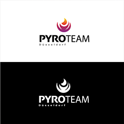

Portfolio
Über mich
Kontakt
Willkommen bei meinem Portfolio!
Hier präsentiere ich dir einige
Logos,
die ich bereits erarbeitet habe
WAS MACHT EIN LOGOS AUS:
Hier habe ich jetzt endlich mal einige meiner Logos:

Welches dieser Logos ist deiner Meinung nach das Gelungenste?
rating
Vital Lounge
Pyroteam
S
Mobile Yoga
Social Natives
Raschen
zum Seitenanfang